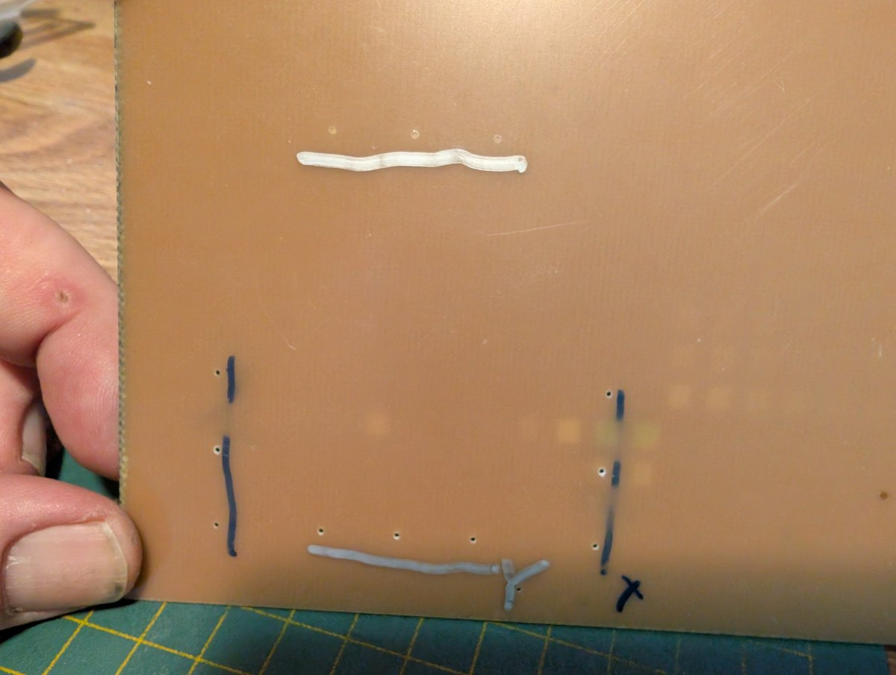
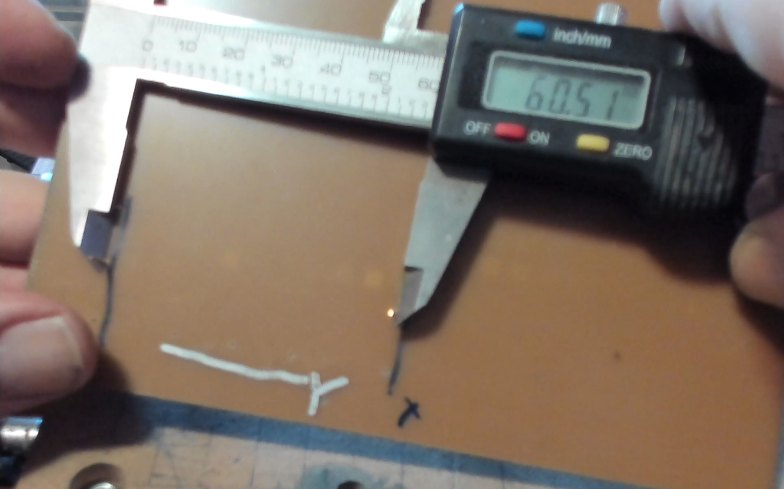
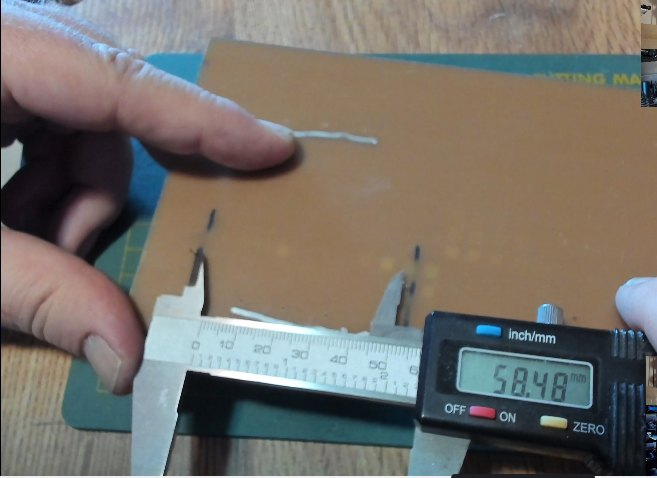

PCB_MillBurn help › Guides
Two short programs that measure the mill rather than the board: how much slack an axis has, and whether X and Y meet at ninety degrees. Drill some holes in scrap, stand pins in them, measure with calipers, and do one piece of arithmetic.
The pictures on this page are representative, not a specification. They were taken on the author's own 3018-class mill with the coupon and bit that happened to be on the bench. Yours will differ — different span, different scrap, a different number on the caliper. What they are there to show is where the jaws go, which is the part words do badly.
Everything this app computes rests on assumptions about your mill that nobody has checked: that a commanded millimetre is a millimetre, that the two axes are square to each other, and that a position reached from the left is the same position reached from the right. On a desktop machine none of those is given, and the first one to be wrong is usually discovered as a board that does not fit together.
The test cuts already refuse to trust a bit's label and measure the tip instead. These are the same idea, one level up. They take about ten minutes each, and the most useful answer either can give is none: a number you can stop worrying about.
Job ▸ Machine checks… No board needs to be open: what this measures belongs to the mill. Pick the check, the axis, the bit and the span, and the panel underneath tells you how much scrap it needs, what each pair of holes should read once pins are in them, and the arithmetic that turns those readings into a number. Write files… produces the program and a page beside it repeating all of that, so the bench has it even when the app is in another room.
From the command line, the same two checks are
millburn-cli machine-check backlash --axis x and
millburn-cli machine-check squareness --span 100.
Clamp the offcut flat and hold it down all over — a coupon that lifts mid-run reads as slack that is not there. Zero X and Y anywhere on it and Z on its surface; nothing here is measured from the machine's own coordinates. Afterwards, deburr both faces: a burr around a hole is exactly where a pin sits, and it is worth more than the difference you are trying to measure.
Backlash is the slack between a screw and its nut: the axis only takes it up when it reverses. So a hole positioned by a move arriving from the left sits a little away from one positioned by a move arriving from the right, and that little is what we are after.
The program drills three rows of two holes, identical in every way except which side each hole is approached from. The arrows below are the approach moves:

Stand a pin in each hole of a row and read over the outsides of the pair. One reading per row is enough here: the same pins are in every row, so their diameter is common to all three and cancels out of the comparison. Take each reading three times.

| Row | Reading | What it is |
|---|---|---|
| 1 | ________ mm | The control: the true spacing, plus one pin. |
| 2 | ________ mm | Long by the backlash. |
| 3 | ________ mm | Short by the backlash. |
backlash = ( row 2 − row 3 ) ÷ 2
Rows 2 and 3 are displaced in opposite directions, so the difference between them is twice the slack. That is the whole trick: it turns a tenth of a millimetre into two tenths, which a caliper can see.
Row 1 is a free extra. Subtract one pin diameter and you have the machine's true spacing over that span; if it is more than a few hundredths from the nominal, the axis's steps-per-millimetre wants looking at before anything else here means much.
| Backlash | What to do |
|---|---|
| under 0.05 mm | Nothing. That is a machine in good order, and the reading is at the edge of what pins and calipers resolve anyway. |
| 0.05 – 0.2 mm | Ordinary for a desktop mill with anti-backlash nuts. Worth knowing, and worth approaching every drilled hole from the same side so it stops mattering. |
| above 0.2 mm | The nut wants adjusting or replacing. Two holes approached from opposite sides then land a fifth of a millimetre closer than the program asked, which is a via missing its pad. |
Run it again for the other axis. They are independent and usually differ.
This one asks whether X and Y meet at ninety degrees. No single-axis measurement can see a skew — both axes can be perfectly calibrated and still not be square to each other — but two diagonals of a square see nothing else.
Here you want the centre-to-centre distance, and a caliper cannot read between two hole centres directly. The way around it: measure over the outsides of the two pins, then between the insides, and average the two. The pin diameter drops out of the average exactly.

The two photographs are of different pairs, so their readings do not go together — they are here to show where the jaws sit. On one pair, the arithmetic is:
centre distance = ( over + between ) ÷ 2
And there is a free check inside it: over minus between is exactly two pin diameters. If it comes out as something else, a jaw was not seated, a pin was not upright, or a burr was in the way — and the average is wrong by half of whatever that error was.
images/machine-check-diagonal.jpg
| Diagonal | Over | Between | Average |
|---|---|---|---|
| A–C | ______ | ______ | ______ |
| B–D | ______ | ______ | ______ |
skew = arcsin( ( one diagonal − the other ) ÷ the diagonal )
On a 100 mm square the diagonals are 141.42 mm, and a 0.10 mm difference between them is about 0.04°; 0.50 mm is about 0.20°, which throws the far corner of a 100 mm board out by a third of a millimetre. Which diagonal is longer tells you which way the error leans.
Squareness lives in the frame, so it is fixed there — not in a file. The app reports it and never quietly bends a program to match. Nothing about drill alignment, levelling or approach direction touches it. A board cut and drilled entirely on one out-of-square mill is out of square with the world and perfectly square with itself, which is why this often does not matter until work moves between two machines.
From the machine these checks were written on, a sub-$500 3018-class mill, after a misaligned burn sent us looking for a fault:
| Check | Readings | Answer |
|---|---|---|
| Backlash, X | 60.6 / 60.5 / 60.6 | rows 2 and 3 differ by 0.1 mm, which is the measurement spread — no backlash worth the name |
| Backlash, Y | 60.8 / 60.8 / 60.7 | the same answer, and row 1 landing exactly on 60.8 says the method was sound |
| Squareness, 60 mm | 84.80 and 84.70 | 0.10 mm apart, about 0.07° — and also the measurement spread, so a ceiling rather than a figure |
Three answers of "nothing much", which together accounted for a quarter of a millimetre that had looked like a defect. The fault was somewhere else entirely — the laser, not the mill. Knowing which machine to stop suspecting is worth an afternoon.